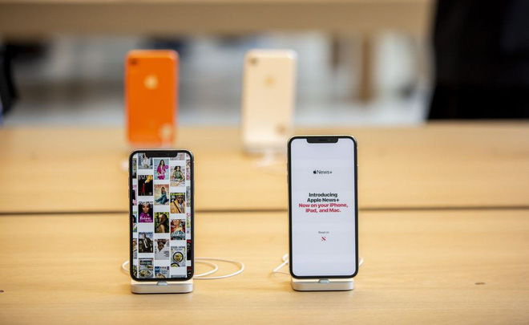
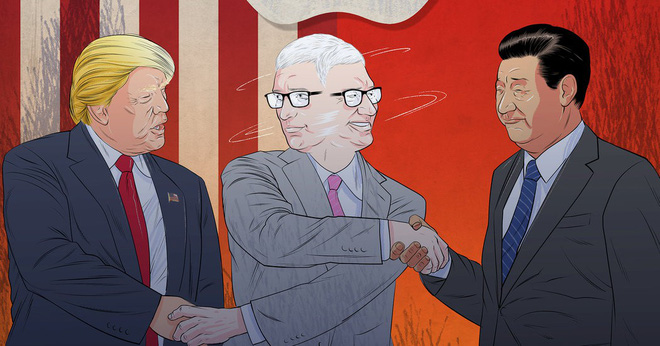
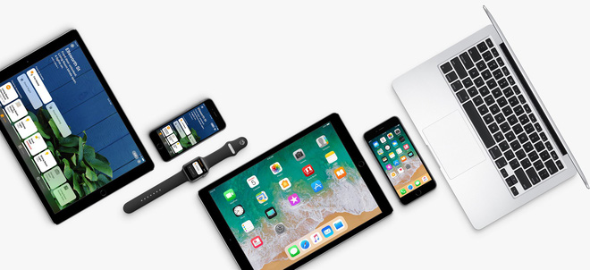
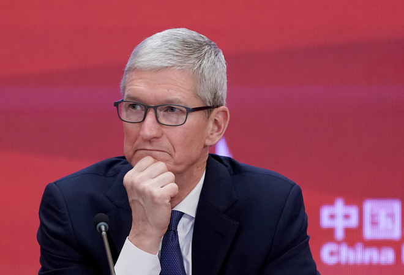

Apple đứng giữa ngã 3 đường vì căng thẳng Mỹ - Trung: giờ phải tăng giá iPhone hay hy sinh lợi nhuận?
Apple đang đứng trước một lựa chọn khó khăn, hoặc phải tăng giá iPhone để bù đắp chi phí, hoặc hy sinh lợi nhuận để duy trì doanh số iPhone và trông chờ vào các nguồn thu từ sản phẩm khác.
Trong hơn một năm nay, Apple đã tránh né được tác động từ cuộc chiến thương mại Mỹ - Trung, một phần nhờ vào mối quan hệ tốt đẹp với Nhà Trắng của CEO Tim Cook. Nhưng giờ đây công ty vừa phải đối mặt với một cú đòn nặng nề vì cuộc chiến này – đến từ cả hai bên chiến tuyến.
Mức thuế quan mới do Mỹ đưa ra vào thứ Hai vừa qua áp lên các mặt hàng nhập khẩu từ Trung Quốc cũng bao gồm cả điện thoại di động. Điều này nghĩa là iPhone, sản phẩm quan trọng nhất của Apple nhưng lại được sản xuất gần như tại Trung Quốc, có thể phải hứng chịu mức thuế nhập khẩu lên đến 25%. Nhiều sản phẩm khác của Apple cũng nằm trong danh sách chịu thuế, bao gồm cả laptop và tablet.
Điều này đẩy công ty đến một lựa chọn khó khăn: hoặc tăng giá các sản phẩm vốn đã đắt đỏ của mình và có thể phải chấp nhận sụt giảm doanh số, hoặc chấp nhận phần chi phí tăng thêm và để mức lợi nhuận thấp hơn.
Kẹt giữa hai chiến tuyến
Theo ghi chú gửi tới các nhà đầu tư của Krish Sankar, nhà phân tích tại Cowen Inc, có một "nguy cơ rất đáng ngại của việc chi phí nhập khẩu cao hơn và sụt giảm nhu cầu của người dùng Mỹ phụ thuộc vào việc liệu Apple có chuyển chi phí thuế quan đó sang cho người dùng hay không. Với việc phần lớn các sản phẩm phần cứng của Apple, bao gồm iPhone, iPad, Watch và máy Mac đều được lắp ráp và nhập khẩu từ Trung Quốc, rủi ro thu nhập có thể rất đáng kể."
Chưa hết, thứ Hai vừa qua Trung Quốc cũng tuyên bố trả đũa với kế hoạch tăng thuế nhập khẩu vào các sản phẩm từ Mỹ từ 10% lên 25%. Điều này cũng sẽ áp dụng cả với các linh kiện dành cho iPhone và iPad. Do vậy, khi các linh kiện làm tại Mỹ như kính bảo vệ màn hình và các cảm biến nhận diện hình ảnh được đưa tới Trung Quốc để lắp ráp vào iPhone hoặc iPad, chúng cũng sẽ trở nên đắt đỏ hơn.
Cho dù vậy, các lo ngại chính đều tập trung vào iPhone. Sản phẩm này chiếm đến 63% doanh số trong năm 2018, và đóng vai trò như cổng kết nối đến phần doanh thu bổ sung từ dịch vụ và các sản phẩm liên quan như Apple Watch hay AirPods.
Do vậy, nếu Apple tăng giá những chiếc iPhone vốn đã đắt đỏ của mình - những thiết bị mới nhất có giá từ 750 USD đến 1.450 USD - chúng sẽ trở nên quá sức chịu đựng với người dùng, và kéo theo sụt giảm doanh số. Điều này có thể tác động gián tiếp đến doanh thu các dịch vụ và sản phẩm khác, đặc biệt khi Apple vừa ra mắt hàng loạt dịch vụ mới.
Dễ hiểu tại sao cổ phiếu Apple lại sụt giảm khi cuộc chiến thương mại bùng phát trở lại. Nhưng đến thứ Tư vừa qua, cổ phiếu của họ đã tăng trở lại 1,1%.
Các căng thẳng thương mại leo thang cũng là phép thử cho ông Cook và chuỗi cung ứng toàn cầu mà ông đã góp phần xây dựng và vận hành. Năm ngoái, CEO này đã cho thấy khả năng chính trị của mình bằng việc gặp mặt tổng thống Donald Trump để tranh luận chống lại việc tăng thuế.
Tuy nhiên, đến đầu năm 2019, những tổn thất mà Apple phải hứng chịu vì cuộc chiến thương mại bắt đầu lộ diện. Công ty cắt giảm dự báo doanh thu và ông Cook nói rằng chính sách thương mại của chính quyền Trump đã gián tiếp làm tổn thương đến nhu cầu của người tiêu dùng với iPhone ở Trung Quốc.
Các sản phẩm Apple sẽ ra sao trước mức thuế quan mới?
Vào năm ngoái, công ty đã tăng giá các sản phẩm mới nâng cấp, vốn đã bắt đầu hứng chịu tác động từ mức thuế quan mới. Chiếc Apple Pencil phiên bản nâng cấp ra mắt vào tháng 10 năm ngoái, có mức giá cao hơn 30 USD so với phiên bản trước. Chiếc Mac Mini mới nhanh hơn cũng có giá cao hơn 300 USD so với người tiền nhiệm. Điều tương tự cũng có thể xảy đến với iPhone trước các mức thuế quan mới.
Mức thuế suất 25% sẽ được áp lên giá bán buôn của các linh kiện và thiết bị khi chúng được nhập khẩu từ Trung Quốc. Apple không tiết lộ về giá bán buôn, tuy nhiên các hãng nghiên cứu thường đưa ra các ước tính của mình đối với những vật liệu này.
Theo ước tính của TechInsights, một chiếc iPhone XS Max dung lượng 256 GB có giá linh kiện vào khoảng 453 USD. Mức thuế 25% áp lên giá linh kiện sẽ là 113 USD, làm tăng giá bán sản phẩm thêm khoảng 9%. Các mẫu máy khác của Apple như iPhone XS và iPhone XR, cũng có thể đối mặt với mức tăng tương tự.
Trong ghi chú mới đây gửi tới các nhà đầu tư, Morgan Stanley ước tính mỗi chiếc iPhone XS giá 999 USD sẽ tốn thêm 160 USD nữa. Các nhà phân tích của JPMorgan dự báo mức thuế mới sẽ làm các sản phẩm tăng giá thêm 14%.
Điều này có thể chỉ tác động đến doanh số của iPhone tại Mỹ. Theo ước tính của hãng nghiên cứu Cross Research, khoảng 1/3 doanh thu iPhone đến từ nước Mỹ.
Giải pháp nào cho Apple?
Cho dù vậy, điều đó sẽ không giải quyết được vấn đề khi những chiếc iPhone đang ngày càng đắt đỏ hơn. Một loạt sản phẩm tăng giá trong những năm gần đây đã dẫn đến việc sụt giảm doanh số.
Theo ước tính của Sankar tại hãng Cowen, nếu Apple chuyển toàn bộ chi phí từ thuế quan đó cho người dùng tại Mỹ, nhu cầu có thể giảm từ 10% đến 40%. Hậu quả là mức thu nhập trên mỗi cổ phiếu có thể giảm từ 1% đến 4% trong năm tài chính 2020.
Còn nếu Apple chấp nhận mức chi phí tăng thêm đó và giữ nguyên giá iPhone như hiện tại. Theo ước tính của Sankar, điều đó sẽ làm thu nhập trên mỗi cổ phiếu giảm từ 6% đến 7%, dựa trên việc chi phí nhập khẩu cho mỗi thiết bị tăng thêm 450 USD và doanh số iPhone tại Mỹ mỗi năm đạt khoảng 40 triệu thiết bị.
Cho dù vậy, Apple cũng từng có kinh nghiệm hấp thụ các chi phí tăng thêm trước đây. Khi tỷ giá dao động, công ty đã tìm được cách bảo vệ tỷ suất lợi nhuận của mình.
Apple cũng có thể chọn cách tránh né vấn đề thuế quan này. Có khả năng Apple đang kiện toàn lại chuỗi cung cấp của mình để sản xuất ra các sản phẩm ở bên ngoài Trung Quốc. Apple đang tăng cường việc sản xuất tại Ấn Độ để tránh thuế địa phương và cũng làm điều tương tự với Foxconn ở Brazil.
Tham khảo Bloomberg